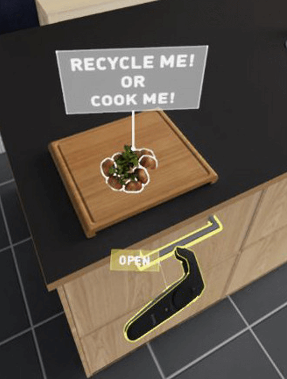
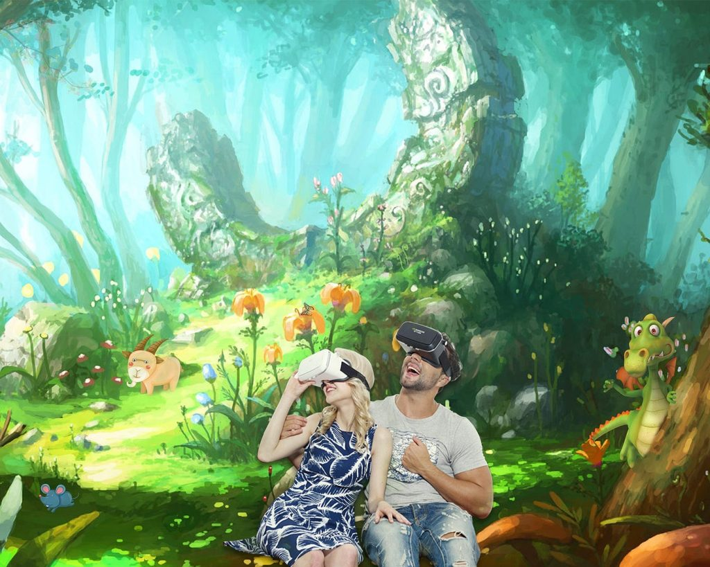
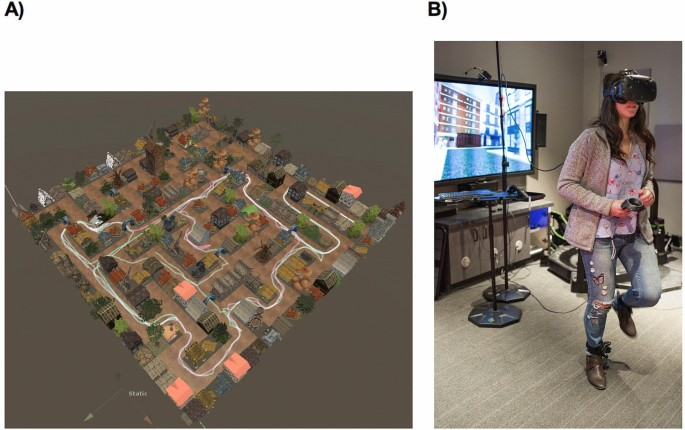

This week’s lecture on Spatial Storytelling in VR has profoundly deepened my understanding of how immersive environments are crafted not only through visual fidelity but also through narrative design, environmental logic, and emotional resonance.
From Affordance to Presence:

Spillers, F. (2022) Design for VR and AR with skeuomorphism [Online image]. Available at: UX Inner Circle [online] (Accessed: 12 March 2025)
We began with the concept of affordances which is the idea that objects in both real and virtual environments should visually or interactively suggest their purpose. This seems simple, yet in VR it’s crucial: a virtual bottle should look drinkable, for example a door should invite opening. These cues construct intuitive spaces where users feel empowered to explore and interact without confusion.
From here, we transitioned to presence which is the psychological state of truly “being there.” I learned that immersion is relatively easy to create (via visual and auditory stimuli), but presence is harder it requires a user’s mind to accept the fiction. This is where narrative, physical feedback, and sensorimotor alignment play a huge role. The concept of “response as if real” stood out to me if a ball bounces in the wrong direction, the illusion is broken.
Virtual Environment as Story:

Thomas, I. (2018) Storytelling in VR. Medium [online]. Available at: the Medium website (Accessed: 12 March 2025)
Another eye-opening part was how virtual environments should match the logic of their worlds. A lightsaber in a medieval castle feels “off” not because of graphics, but because it breaks the story-world coherence. This reminded me that worldbuilding in VR isn’t only technical it’s narrative. Users respond best when all elements lighting, colour, interaction reinforce the same emotional and thematic tone.
We also explored foreground, midground, background, and skybox design principles, which are borrowed from film but reshaped in VR. I realized that unlike linear media, VR demands spatial storytelling what users see and how they move matters as much as what they’re told.
Navigation and Wayfinding:

Wais, P.E. et al. (2021) Virtual reality game wayfinding task [Online image]. In Virtual reality video game improves high‑fidelity memory in older adults. Scientific Reports. Available at:https: //www.google.com/url?sa=i&url=https%3A%2F%2Fwww.nature.com%2Farticles%2Fs41598-021-82109-3&psig=AOvVaw0MnQ0g9nnEX2UEMrfaxTKr&ust=1748213724508000&source=images&cd=vfe&opi=89978449&ved=0CBcQjhxqFwoTCPiq3eeZvY0DFQAAAAAdAAAAABAE (Accessed: 12 March 2025)
One of the most practical lessons was about wayfinding. It’s easy to get lost in VR, so designers need to create “mental maps” through landmarks, guided paths, and environmental cues. The idea that wayfinding mimics how we explore cities in real life recognizing towers, pathways, and entrances made me rethink level design. I now see navigation not just as movement but as a form of experiential storytelling.
Story as Emotion, Emotion as Interface
The second half of the lecture emphasized the emotional layer of VR storytelling. We discussed presence of self, social presence, and environmental presence, and how emotion is not just experienced but designed. I was especially intrigued by the idea that empathy is not embedded in the technology it comes from how we design the story and interactions.
Using lighting, sound, and even environmental response (e.g., creatures that react to your presence), we can craft experiences that evoke joy, fear, or curiosity. This made me think of VR not as a medium for escape, but as a platform for emotional dialogue between creator and user.
Personal Reflection
What I found most inspiring is how VR storytelling blends cinematic language, game logic, architectural space, and psychological design into one cohesive practice. Unlike films or games alone, VR requires us to think in layers from spatial design to sensory alignment, from narrative arcs to user interaction.
I also started to question: in my own projects, am I building environments that just look good? Or am I building places that feel lived-in, emotionally resonant, and narratively coherent?